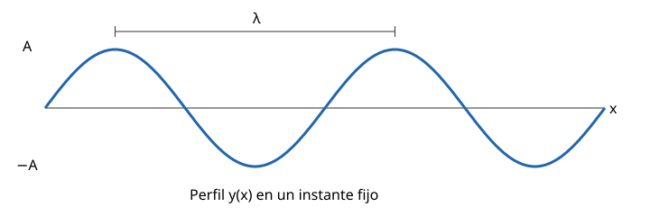

Ondas armónicas
Ondas armónicas
Del foco a cualquier punto
Si el foco situado en \(x=0\) vibra según \(y(0,t)=A\sin(\omega t+\varphi_0)\) y la perturbación avanza hacia \(+x\) con rapidez \(v\), tarda \(\Delta t=x/v\) en alcanzar la posición \(x\).
Ese punto reproduce el movimiento del foco con dicho retraso:
\[y(x,t)=A\sin\left[\omega\left(t-\frac{x}{v}\right)+\varphi_0\right].\]
Como \(\omega/v=k\), obtenemos
\[\boxed{y(x,t)=A\sin(\omega t-kx+\varphi_0)}.\]
La expresión supone una onda armónica ya establecida en la región estudiada; la llegada inicial de un tren finito necesita considerar además su frente.
Sentido de propagación y fase
Con \(\omega>0\) y \(k>0\):
| Ecuación | Sentido |
|---|---|
| \(A\sin(\omega t-kx+\varphi_0)\) | Hacia \(+x\) |
| \(A\sin(\omega t+kx+\varphi_0)\) | Hacia \(-x\) |
Para seguir una cresta se mantiene constante la fase. En el primer caso, \(\omega t-kx=\text{constante}\) implica \(dx/dt=\omega/k>0\).
La fase es \(\Phi=\omega t-kx+\varphi_0\). En un punto fijo la onda se repite cada \(T\); en un instante fijo el perfil se repite cada \(\lambda\).

Para dos puntos separados por \(\Delta x\) en el mismo instante:
\[\Delta\Phi=-k\Delta x.\]
Están en fase si \(\Delta x=n\lambda\), y en oposición de fase si \(\Delta x=(2n+1)\lambda/2\), con \(n\) entero. Una cresta tiene \(y=A\) y un valle \(y=-A\).
En una onda viajera, los puntos donde \(y=0\) en un instante pueden moverse después. Reservamos nodo para un punto de una onda estacionaria cuya perturbación es siempre nula.
Movimiento de las partículas del medio
Para estudiar una partícula mantenemos fija su coordenada de equilibrio \(x\) y derivamos respecto al tiempo:
\[v_y(x,t)=\frac{\partial y}{\partial t}=A\omega\cos(\omega t-kx+\varphi_0),\] \[a_y(x,t)=\frac{\partial^2 y}{\partial t^2}=-\omega^2y(x,t).\]
Cada partícula realiza un MAS de amplitud \(A\) en este modelo sin atenuación. Su velocidad \(v_y\) cambia con el tiempo y tiene módulo máximo \(A\omega\). La rapidez de propagación \(v=\omega/k\) describe el avance de la perturbación; es una magnitud distinta.
Sea, en unidades SI,
\[y(x,t)=0{,}020\sin(8\pi t-2\pi x+\pi/2).\]
Entonces \(A=0{,}020\,\mathrm m\), \(f=4\,\mathrm{Hz}\), \(T=0{,}25\,\mathrm s\), \(\lambda=1\,\mathrm m\) y \(v=4\,\mathrm{m\,s^{-1}}\), hacia \(+x\).
En \(x=0\), \(t=0\), la partícula está en \(y=A\), con \(v_y=0\) y \(a_y=-1{,}28\pi^2\simeq-12{,}6\,\mathrm{m\,s^{-2}}\).